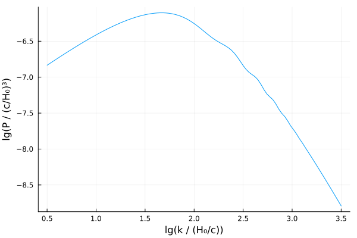
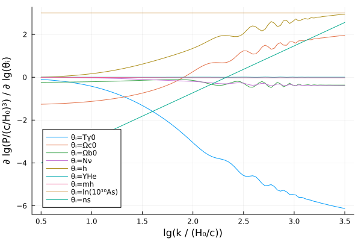
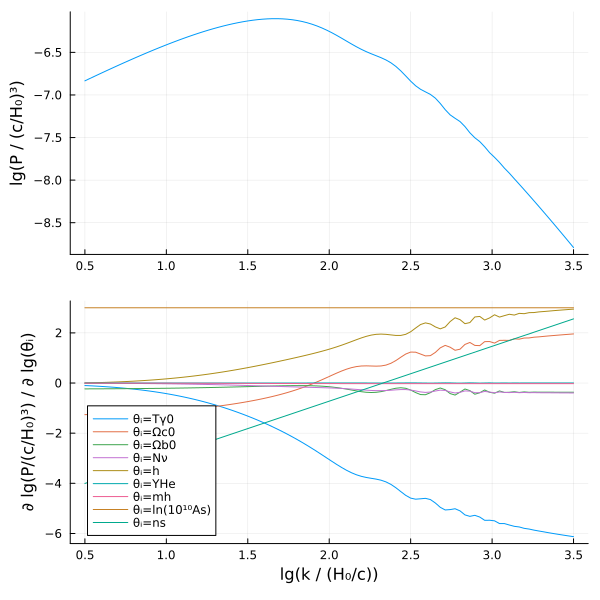

Using automatic differentiation
This tutorial shows how to compute the power spectrum $P(k; \theta)$ and its (logarithmic) derivatives
\[\frac{\partial \lg P}{\partial \lg \theta_i}\]
using automatic differentiation with ForwardDiff.jl. This technique can also differentiate any other quantity.
1. Wrap the evaluation
First, we must decide which parameters $\theta$ the power spectrum $P(k; \theta)$ should be considered a function of. To do so, let us write a small wrapper function that calculates the power spectrum as a function of the parameters $(T_{\gamma 0}, \Omega_{c0}, \Omega_{b0}, N_\textrm{eff}, h, Y_p)$, following the Getting started tutorial:
using SymBoltz
M = ΛCDM(K = nothing)
pars = [M.γ.T₀, M.c.Ω₀, M.b.Ω₀, M.ν.N, M.g.h, M.b.YHe, M.h.m_eV, M.I.ln_As1e10, M.I.ns]
prob0 = CosmologyProblem(M, Dict(pars .=> NaN))
probf = remake_function(prob0, pars)
P(k, θ) = spectrum_matter(probf(θ), k)P (generic function with 1 method)It is now easy to evaluate the power spectrum:
θ = [2.7, 0.27, 0.05, 3.0, 0.7, 0.25, 0.02, 3.0, 0.95]
ks = 10 .^ range(0.5, 3.5, length=100)
Ps = P(ks, θ)100-element view(::Matrix{Float64}, 1, :) with eltype Float64:
1.4640771794736853e-7
1.5594844269591502e-7
1.6605279844685188e-7
1.7674432723968415e-7
1.8804598265953527e-7
1.9997985814341873e-7
2.1256679097386052e-7
2.2582601084944904e-7
2.3977485679442926e-7
2.544279922058311e-7
⋮
5.6980704812574796e-9
4.8893194118980154e-9
4.1876434040181875e-9
3.5837761001928694e-9
3.062994222151345e-9
2.6148918239926433e-9
2.229894674495652e-9
1.8995233562748092e-9
1.6164357020044236e-9This can be plotted with
using Plots
plot(log10.(ks), log10.(Ps); xlabel = "lg(k / (H₀/c))", ylabel = "lg(P / (c/H₀)³)", label = nothing)
2. Calculate the derivatives
To get $\partial \lg P / \partial \lg \theta$, we can simply pass the wrapper function P(k, θ) through ForwardDiff.jacobian:
using ForwardDiff
lgP(lgθ) = log10.(P(ks, 10 .^ lgθ)) # in log-space
dlgP_dlgθs = ForwardDiff.jacobian(lgP, log10.(θ))100×9 Matrix{Float64}:
-0.100045 -1.26026 -0.233404 -0.00633046 … -0.0048868 3.0 -4.00456
-0.109422 -1.25628 -0.232666 -0.00702006 -0.00479578 3.0 -3.93827
-0.119751 -1.2519 -0.231856 -0.00777771 -0.00471129 3.0 -3.87199
-0.1311 -1.2471 -0.230967 -0.00860877 -0.00463743 3.0 -3.8057
-0.143543 -1.24185 -0.229994 -0.00951897 -0.00457881 3.0 -3.73941
-0.157151 -1.23612 -0.228932 -0.010514 … -0.0045404 3.0 -3.67313
-0.172003 -1.22989 -0.227776 -0.0116007 -0.00452722 3.0 -3.60684
-0.188171 -1.22312 -0.226521 -0.0127853 -0.00454398 3.0 -3.54055
-0.205732 -1.21578 -0.225159 -0.0140745 -0.00459468 3.0 -3.47427
-0.224765 -1.20784 -0.223688 -0.0154752 -0.0046823 3.0 -3.40798
⋮ ⋱
-5.86646 1.82778 -0.361229 -0.383038 -0.0253043 3.0 2.02752
-5.90172 1.84142 -0.364994 -0.386734 -0.0253076 3.0 2.0938
-5.93562 1.86082 -0.365714 -0.38789 -0.02531 3.0 2.16009
-5.97162 1.87909 -0.364624 -0.389071 -0.0253121 3.0 2.22638
-6.00446 1.89528 -0.365693 -0.390893 … -0.025314 3.0 2.29266
-6.03629 1.91169 -0.36613 -0.3923 -0.0253157 3.0 2.35895
-6.06731 1.92767 -0.366318 -0.393588 -0.0253171 3.0 2.42524
-6.09749 1.94306 -0.366511 -0.394864 -0.0253182 3.0 2.49152
-6.12693 1.95788 -0.366752 -0.396155 -0.0253194 3.0 2.55781The matrix element dlgP_dlgθs[i, j] now contains $\partial \lg P(k_i) / \partial \lg \theta_j$. We can plot them all at once:
plot(
log10.(ks), dlgP_dlgθs;
xlabel = "lg(k / (H₀/c))", ylabel = "∂ lg(P/(c/H₀)³) / ∂ lg(θᵢ)",
labels = "θᵢ=" .* ["Tγ0" "Ωc0" "Ωb0" "Nν" "h" "YHe" "mh" "ln(10¹⁰As)" "ns"]
)
Get values and derivatives together
The above example showed how to calculate the power spectrum values and their derivatives through two separate calls. If you need both, it is faster to calculate them simultaneously with the package DiffResults.jl:
using DiffResults
# Following DiffResults documentation:
Pres = DiffResults.JacobianResult(ks, θ) # allocate buffer for values+derivatives for a function with θ-sized input and ks-sized output
Pres = ForwardDiff.jacobian!(Pres, lgP, log10.(θ)) # evaluate values+derivatives of lgP(log10.(θ)) and store the results in Pres
lgPs = DiffResults.value(Pres) # extract values
dlgP_dlgθs = DiffResults.jacobian(Pres) # extract derivatives
p1 = plot(
log10.(ks), lgPs;
ylabel = "lg(P / (c/H₀)³)", label = nothing
)
p2 = plot(
log10.(ks), dlgP_dlgθs;
xlabel = "lg(k / (H₀/c))", ylabel = "∂ lg(P/(c/H₀)³) / ∂ lg(θᵢ)",
labels = "θᵢ=" .* ["Tγ0" "Ωc0" "Ωb0" "Nν" "h" "YHe" "mh" "ln(10¹⁰As)" "ns"]
)
plot(p1, p2, layout=(2, 1), size = (600, 600))
General approach
The technique shown here can be used to calculate the derivative of any SymBoltz.jl output quantity:
- Write a wrapper function
output(input)that calculates the desired output quantities from the desired input quantities. - Use
ForwardDiff.derivative(output, input)(scalar-to-scalar),ForwardDiff.gradient(output, input)(vector-to-scalar) orForwardDiff.jacobian(output, input)(vector-to-vector) to evaluate the derivative ofoutputat the valuesinput. Or use the similar functions inDiffResultsto calculate the value and derivatives simultaneously.